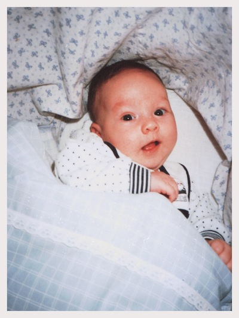

21
years in the
making
- 7670 days on earth
- 1437 cups of tea drunk*
- 8 countries visited
26% complete
18th February 1991

Then
Likes:
- Shapes
- Colours
- Pooping
- Chewing
Dislikes:
- Not sleeping
- Not eating
- Talking
Now
Likes:
- Food
- Music
- Design
- Beer
Dislikes:
- Not sleeping
- Not eating
- Mushrooms